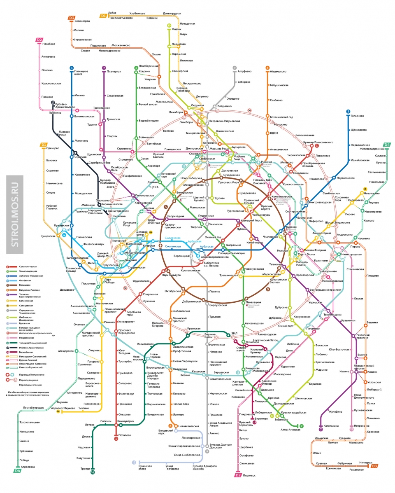

Идея о запуске в Москве подземной железной дороги появилась на полвека раньше, чем проект стали воплощать в жизнь. С 1875 по 1930 год было представлено как минимум пять проектов строительства метрополитена. Но к работам приступили лишь в начале 1930-х годов, когда стало совершенно очевидно, что общественный транспорт (представленный в основном трамваями) не справлялся с пассажирскими перевозками. После пробки 6 января 1931 года, когда в городе на день встал весь транспорт — от трамваев до извозчиков, в Москве началось строительство метро.
1931–1940 годы: дворец для народа
10 декабря 1931 года во двор дома 13 по улице Русаковской (на месте будущего перегона «Сокольники» — «Красносельская») пришли семь рабочих и вонзили лопаты в мерзлую землю. Через месяц работа кипела уже на всех участках первой линии от «Сокольников» до «Дворца Советов» (сегодня — «Кропоткинская»). Сначала метро не собирались прятать глубоко под землю, но для этого пришлось бы перекопать весь город. Молодой инженер Вениамин Маковский предложил прогрессивное решение: строить на глубине. Неожиданная идея вызвала море протестов, но пришлась по душе градоначальнику Лазарю Кагановичу. Точку в споре поставил Иосиф Сталин, который утвердил проект глубокого заложения.
